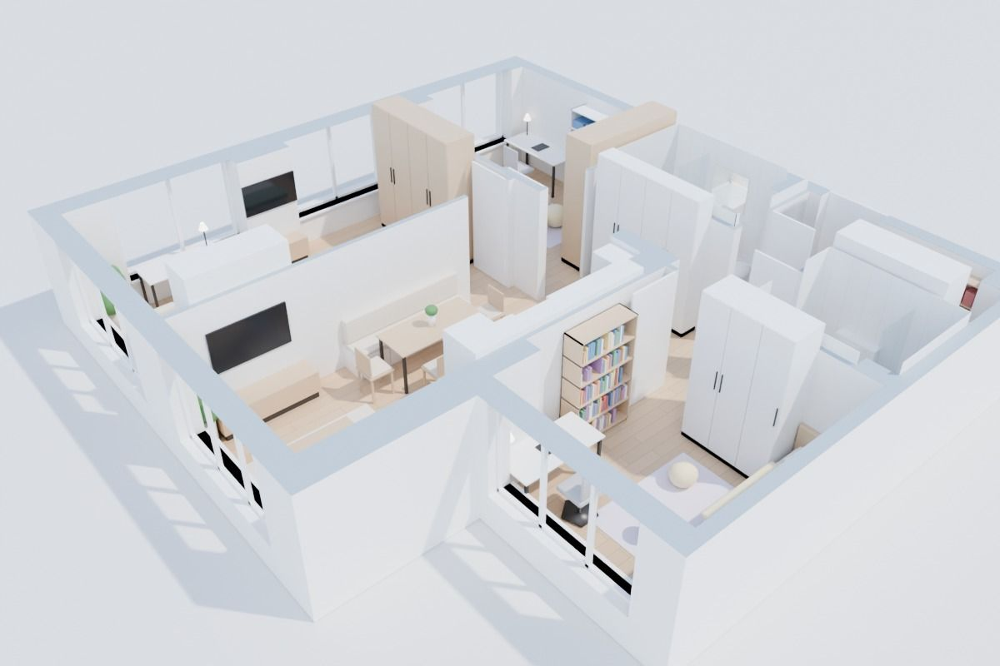
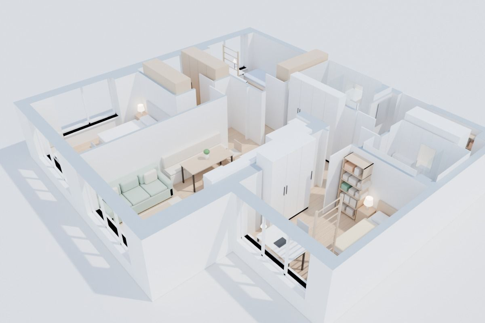
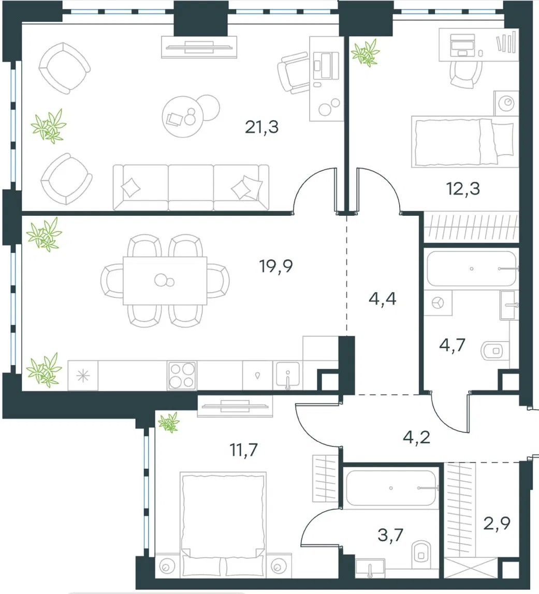

Объект
Квартира 85,1 м²
Планировка застройщика: комнаты 21,3, 12,3 и 11,7 м², кухня-гостиная 19,9 м², коридор 4,4 м², прихожая 4,2 м², два санузла 4,7 и 3,7 м² и гардероб 2,9 м² у входа. Мебель застройщика убрана, предложены три варианта: родители живут в большой комнате 21,3 м², у каждого ребёнка своя комната, угол детской справа выровнен под шкаф 210 см, дверь нижнего санузла перенесена в прихожую.
85,1 м² по сумме помещенийпотолок 2,7 мразмеры сняты с плана, ±5 см
Страницы застройщика
Варианты

Вариант 1
Шкафы вдоль стен
Стройка: угол детской 1, дверь С/у 2Шкафы родителей 3,7 м7 мест за столом

Вариант 2
Кровать в нише из шкафов
Стройка: угол детской 1, дверь С/у 2Шкафы родителей 4,4 м + антресольКухня 4,6 м, столешница 180 см

Вариант 3
Спальня с гардеробной
Стройка: + 2 перегородки гардеробнойГардеробная ≈ 5,5 м²Спальня ≈ 15,4 м²
Чем варианты отличаются
| Вариант 1 шкафы вдоль стен | Вариант 2 кровать в нише шкафов | Вариант 3 гардеробная с окном | |
|---|---|---|---|
| Главная идея | простая стройка, два шкафа у родителей | больше всего шкафов, кухня 4,6 м | гардеробная с окном |
| Спальня родителей | кровать 180, ТВ на простенке, стол у окна | кровать 180 в нише из шкафов, антресоль, чайный уголок | спальня ≈ 15,4 м² и гардеробная ≈ 5,5 м² |
| Хранение у родителей | 3,7 м шкафов | 4,4 м + антресоль | гардеробная 2 × 205 см + комод |
| Детская 1 | кровать 90, стол 150, шкаф 210 | кровать 120, стол 150, шкаф 210 | кровать 90, стол под окном, шкаф 210 |
| Детская 2 | кровать 90, шкаф 145 | кровать 120, шкаф 160 | кровать 120, шкаф 160 |
| Кухня | 3,6 м, духовка под варочной | 4,6 м, свободно 180 см | 3,6 м, колонна с духовкой и СВЧ |
| Обеденный стол | 160×70 со скамьёй, 7 мест | 160×70 со скамьёй, 6 мест | 160×70 со скамьёй, 6 мест |
| Санузел 2 | ванна | душ + стиральная машина | ванна |
| Шкафы глубиной 35–60 см | 11,1 пог. м | 11,9 пог. м | 11,6 пог. м |
| Новые перегородки | угол детской 1, заделка проёма, дверь С/у 2 | как в варианте 1 | как в варианте 1 + 2 перегородки гардеробной |
| Кому подходит | если нужна простая стройка | если много вещей и часто готовите | если хочется отдельную гардеробную |
План застройщика
Размеры на всех чертежах сняты с этого плана: стены обведены по картинке, масштаб подобран по площадям, 0,97 см на пиксель. Площади помещений совпали с планом в пределах ±2 %, а стены модели легли на стены плана с точностью около 1 см. Перед заказом мебели комнаты стоит перемерить.


| Помещение | На плане, м² | Размер, см | По размерам, м² |
|---|---|---|---|
| Большая комната (спальня родителей) | 21,3 | 605 × 351 | 21,2 |
| Комната справа (детская 1) | 12,3 | 320 × 351 + ниша 180 × 61 | 12,3 |
| Кухня-гостиная | 19,9 | 608 × 329 без шахты | 19,8 |
| Коридор | 4,4 | 137 × 336 без колонны | 4,4 |
| Санузел 1 | 4,7 | 180 × 269 без шахты | 4,7 |
| Прихожая | 4,2 | 332 × 128 | 4,2 |
| Комната снизу (детская 2) | 11,7 | 344 × 346 без выступа 79 × 29 | 11,7 |
| Санузел 2 | 3,7 | 182 × 211 без колонны | 3,7 |
| Гардероб | 2,9 | 143 × 218 без шахты | 3,0 |